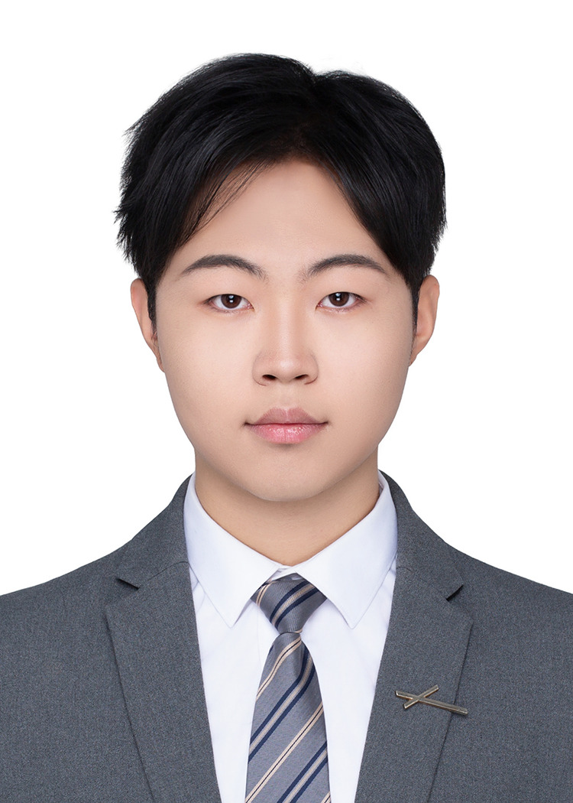

ROBOTICS & EMBODIED INTELLIGENCE
吕怡纬Yiwei Lyu
机器人本体 · 智能感知 · 多模态交互
研究跨介质机器人的环境适应，
以及末端执行器与具身交互系统。
中国科学院大学计算机应用技术 · 已推免
01 / 03
六驱全向矢量水下机器人
机械构型 · 推进布局 · 水下机动
01 / ABOUT
关于我About me

我是吕怡纬，已推免至中国科学院大学计算机应用技术专业，本科就读于郑州大学人工智能拔尖创新班。
研究兴趣 RESEARCH INTERESTS
02 / SELECTED RESEARCH & ENGINEERING
研究与项目Selected work
围绕机器人本体、环境适应和多模态交互，
开展机构设计、仿真分析、原型制作与系统集成。
IN THE LAB / EXPERIMENTS IN MOTION
实验现场Research in motion
从原型机构到真实任务。
保留实验中的动作、过程与细节。
03 / PUBLICATIONS & INTELLECTUAL PROPERTY
学术成果Publications & patents
04 / EXPERIENCE & RECOGNITION
经历与荣誉Experience & recognition
科研与组织经历 EXPERIENCE
代表性荣誉 SELECTED HONORS
05 / BEYOND THE LAB
交流、分享与实践Beyond the lab
组织科创分享与技术培训，
也在团队协作、公开表达和实践中积累经验。
GET IN TOUCH
联系我Let’s talk.
欢迎交流机器人、具身智能与智能硬件方向的研究和实习机会。